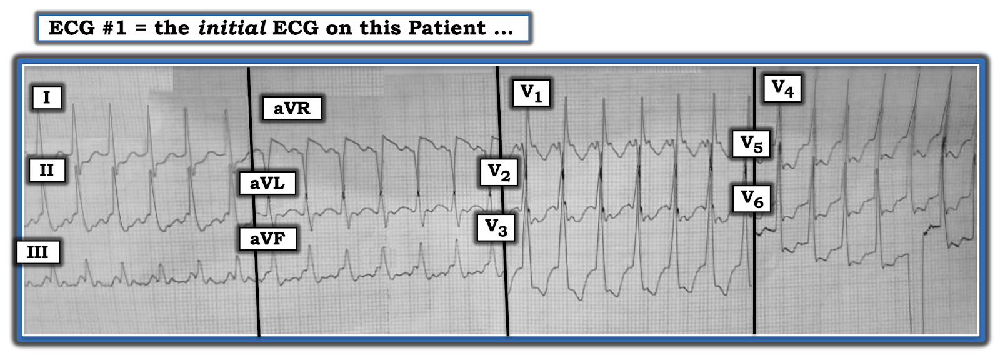
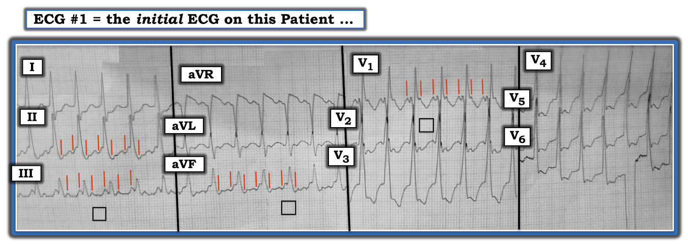
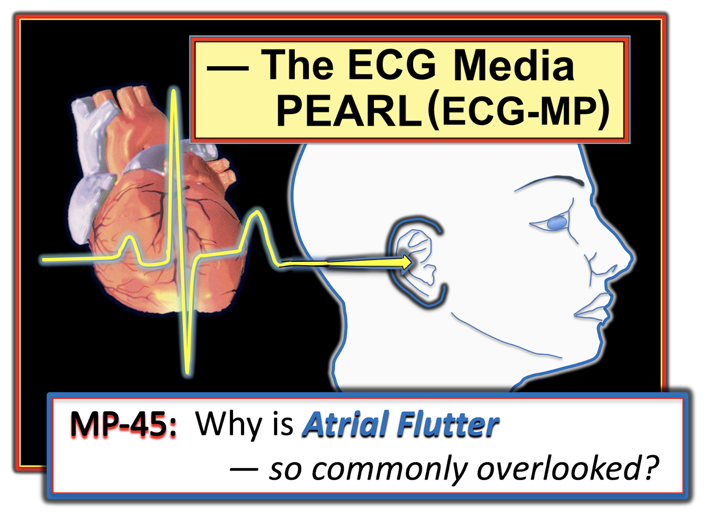
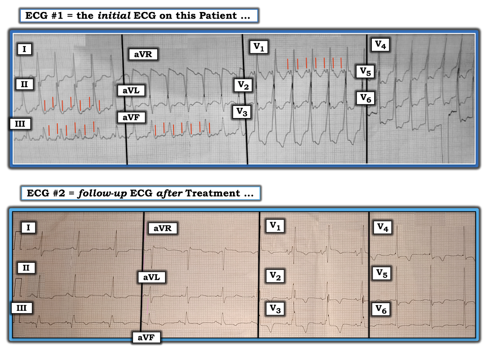

ECG Blog #229 — VT hay là một nhịp khác?
Điện tâm đồ trong Hình-1 được ghi ở một người đàn ông lớn tuổi nhập viện vì nghi viêm phổi do Covid. Ngoài các triệu chứng hô hấp — ông còn than hồi hộp đánh trống ngực và đau ngực. Không có bản ghi trước đó để so sánh. Bệnh nhân ổn định huyết động vào thời điểm ghi điện tâm đồ #1.
- Đây là nhịp GÌ?
- Đây là VT — hay là một nhịp khác?


SUY NGHĨ của tôi về điện tâm đồ #1:
Tôi thấy ca này khó. Ca được gửi cho tôi mà không có điện tâm đồ nào trước đó để so sánh. Dưới đây là "Suy nghĩ của tôi" — mà tôi trình bày theo đúng trình tự chúng đến với tôi:
- Nhịp trong Hình-1 là một WCT (nhịp nhanh QRS rộng — Wide-Complex Tachycardia) đều với tần số ~150/phút — nhưng không thấy rõ sóng P xoang. Điều này ngay lập tức đặt ra khả năng VT (nhịp nhanh thất — Ventricular Tachycardia). Dù vậy — vì bệnh nhân đang ổn định huyết động, chúng ta có "điều xa xỉ" là thêm một chút thời gian để xem kỹ hơn bản ghi.
- Dù biết rằng ít nhất 80% tất cả các nhịp WCT đều không có sóng P xoang rốt cuộc sẽ là VT — hình thái QRS trong Hình-1 trông thật sự giống trên thất! Đó là vì: i) Có hình thái RBBB rất điển hình ở V1, với rSR' ba pha trong đó sóng S đi xuống dưới đường đẳng điện và "tai thỏ phải" cao hơn (tức là phức bộ R' mảnh và cao hơn); và, ii) Có sóng R nổi bật với pha lên ban đầu khá nhanh và sóng S ở cuối tại các chuyển đạo bên I và V6. (LƯU Ý: Để ôn lại các khái niệm này — Xem ECG Blog #196 và ECG Blog #211).
- Tôi ngờ rằng mình đang thấy hoạt động nhĩ ở một số chuyển đạo — có thể dưới dạng dẫn truyền AV 2:1.
BÌNH LUẬN: Tôi xin nhấn mạnh rằng một người thực hành có kinh nghiệm chỉ nên mất chưa tới 20 giây để đi đến các nhận định trên.
- Tôi cũng xin nhấn mạnh rằng tại thời điểm này — tôi hoàn toàn không chắc chắn về nguyên nhân của nhịp trong Hình-1. Dù vậy — ước lượng "trong đầu" của tôi về chẩn đoán khả dĩ cho nhịp WCT này đã chuyển từ khả năng VT trên 80% — sang xác suất cao hơn nhiều rằng đây là một dạng SVT (nhịp nhanh trên thất — SupraVentricular Tachycardia) vì: i) Hình thái QRS trông quá điển hình cho dẫn truyền kiểu RBBB; và, ii) Tôi thật sự nghĩ rằng mình đang thấy hoạt động nhĩ nền đều đặn ở một số chuyển đạo.
- CẢNH BÁO #1: Có một số dạng VT phân nhánh (fascicular VT), trong đó QRS không quá rộng — và, hình thái QRS có thể giống dẫn truyền kiểu RBBB. Phần lớn các trường hợp VT phân nhánh — có hình ảnh blốc hai phân nhánh (mà ở đây chúng ta không thấy) — và cũng có một vài khác biệt nhỏ so với dẫn truyền RBBB "điển hình" (mà ở đây tôi không thấy) — nhưng vì còn khả năng VT phân nhánh này, tôi chưa chắc chắn 100% về nguồn gốc trên thất (Để biết thêm về VT vô căn, gồm cả VT phân nhánh — Xem ECG Blog #197).
SUY NGHĨ của tôi về điện tâm đồ #1 (tiếp theo) :
Vì bệnh nhân này ổn định huyết động — tôi muốn xem liệu tôi CÓ thể "lần theo" hoạt động nhĩ đều đặn được không (Hình-2):
- ĐIỂM THEN CHỐT (PEARL) #1: NẾU tôi đúng khi cho rằng nhịp trong Hình-1 là nhịp trên thất — thì mô tả những gì chúng ta đánh giá được đến lúc này sẽ là một nhịp SVT đều không thấy rõ sóng P xoang, với tần số khoảng ~150/phút. Dù nhịp này có thể là một dạng SVT "vào lại" (tức là AVNRT hoặc AVRT) — mô tả này phải ngay lập tức gợi đến chẩn đoán AFlutter (cuồng nhĩ — Atrial Flutter) cho đến khi chứng minh được điều ngược lại. Biết trước khả năng cuồng nhĩ sẽ giúp việc tìm hoạt động nhĩ nền trong Hình-2 dễ dàng hơn.
- ĐIỂM THEN CHỐT (PEARL) #2: Dù việc tìm hoạt động nhĩ nền (và bị che khuất một phần) của tôi luôn bao gồm việc đánh giá cả 12 chuyển đạo — các chuyển đạo mà tôi thấy hữu ích nhất khi tìm hoạt động nhĩ bị che khuất là: i) Các chuyển đạo dưới (bất ngờ là — chuyển đạo III thường hữu ích hơn chuyển đạo II trong việc tìm hoạt động nhĩ không phải xoang!); ii) Chuyển đạo aVR; và, iii) Các chuyển đạo V1 và V2.
- Các vạch dọc ngắn màu ĐỎ trong Hình-2 gợi ý mạnh rằng thực sự có hoạt động nhĩ nền đều đặn — với 2 sóng P nằm trong mỗi khoảng R-R ở một số chuyển đạo. Hoạt động nhĩ này có được dẫn truyền — điều đó thể hiện rõ qua việc khoảng cách (tức là khoảng PR) từ phức bộ QRS ở một số chuyển đạo chọn lọc đến hoạt động nhĩ đi trước là hằng định — nghĩa là có dẫn truyền AV 2:1.
- ĐIỂM THEN CHỐT (PEARL) #3: Dù chúng ta có thể xác minh hoạt động nhĩ 2:1 đều một cách chính xác bằng compa đo (calipers) — tôi xin nhấn mạnh rằng với luyện tập, người thực hành có kinh nghiệm có thể học cách nhận ra ngay các mối liên hệ P-QRS này tại giường bệnh (không cần phải với lấy compa đo trước mặt một bệnh nhân đang bệnh cấp tính).
- ĐIỂM THEN CHỐT (PEARL) #4: Do độ phân giải chưa tốt, cũng như giấy điện tâm đồ trong Hình-2 hơi bị nghiêng — tôi đã vẽ bằng màu ĐEN đường viền của vài ô lớn trên lưới giấy điện tâm đồ. Vì khoảng P-P của các vạch dọc ĐỎ trong hình này dài xấp xỉ 1 ô lớn — điều này khẳng định tần số nhĩ là ~300/phút — và nhịp duy nhất tạo ra hoạt động nhĩ đều ở ~300/phút là Cuồng nhĩ!
- CẢNH BÁO #2: Tôi biết có những ca hiếm cuồng nhĩ và VT cùng tồn tại. Dù vậy — sự kết hợp giữa hoạt động nhĩ đều ở ~300/phút với dẫn truyền AV 2:1 + hình thái QRS rất điển hình cho dẫn truyền kiểu RBBB — gợi ý mạnh rằng nhịp trong Hình-2 đúng là AFlutter ở một bệnh nhân hoặc có RBBB từ trước hoặc cuồng nhĩ kèm dẫn truyền lệch hướng liên quan tần số. Về mặt lâm sàng — vì bệnh nhân này ổn định huyết động — nhiều khả năng tôi sẽ bắt đầu thuốc làm chậm tần số với giả định rằng nhịp này là cuồng nhĩ dẫn truyền kiểu RBBB.


=======================================
LƯU Ý: ECG Audio PEARL dài 10:00 phút hôm nay hoàn toàn nói về Cuồng nhĩ.
=======================================


Hôm nay — ECG Media PEARL #45 (10:00 phút Audio) — Vì sao Cuồng nhĩ lại hay bị bỏ sót đến vậy? Ôn lại các ĐIỂM THEN CHỐT (PEARLS) về chẩn đoán cuồng nhĩ trên điện tâm đồ — và — Có gì "mới"? trong lĩnh vực này, về phân biệt giữa cuồng nhĩ với nhịp nhanh nhĩ (29/5/2021).
- Với những ai muốn một bài ôn nâng cao hơn về một số khái niệm mới hơn liên quan tới cuồng nhĩ — Hãy xem bài viết này của García-Cosío F và cs. (Clinical Approach to ATach and AFlutter, Rev Esp Cardiol 65(4):363-375, 2012).
- Để biết thêm về phân biệt AFlutter với ATach — Hãy xem Hình-4 trong Phần bổ sung bên dưới.
Ca bệnh tiếp theo:
Nhịp nhanh trong Hình-2 được điều trị bằng thuốc chẹn beta. Triệu chứng của bệnh nhân giảm bớt — và một điện tâm đồ theo dõi được ghi (Hình-3).
- Điện tâm đồ #2 cho bạn biết ĐIỀU GÌ về nhịp trên điện tâm đồ #1?
- Trên điện tâm đồ #2 còn điều gì khác đáng lo ngại không?


SUY NGHĨ của tôi về Hình-3:
"Tin tốt" — là điều trị bằng thuốc chẹn beta đã chuyển thành công nhịp nhanh thấy trên điện tâm đồ #1 về nhịp xoang bình thường (Lưu ý sóng P xoang dương, bình thường đã trở lại, với khoảng PR cố định và bình thường ở chuyển đạo II của điện tâm đồ #2).
- ĐIỂM THEN CHỐT (PEARL) #5: Bản ghi sau chuyển nhịp có thể cực kỳ quý giá để khẳng định nguyên nhân của một nhịp nhanh chưa rõ. Bằng chứng cho thấy nhịp trên điện tâm đồ #1 là nhịp trên thất — đến từ việc hình thái QRS giống hệt ở các chuyển đạo I, V1 và V6 của điện tâm đồ #2. Lưu ý hình thái RBBB rất điển hình sau khi chuyển về nhịp xoang, với phức bộ rSR' ba pha ở V1 của điện tâm đồ #2 (tức là rSR' ba pha trong đó sóng S đi xuống dưới đường đẳng điện và có "tai thỏ phải" cao hơn với phức bộ R' mảnh và cao hơn). Các chuyển đạo bên I và V6 có sóng S ở cuối (đúng như phải có) trên điện tâm đồ #2 sau khi chuyển về nhịp xoang.
- Bằng chứng cho thấy các vạch dọc ĐỎ trên điện tâm đồ #1 thực sự biểu thị hoạt động nhĩ 2:1 — đến từ thực tế là các sóng được đánh dấu bằng vạch ĐỎ trên điện tâm đồ #1 không còn xuất hiện trên đường nền sau khi chuyển về nhịp xoang.
ĐIỂM THEN CHỐT (PEARL) #6: Bản ghi sau chuyển nhịp cũng có thể giúp nhận ra các thay đổi điện tâm đồ cấp có thể đã không rõ trong lúc nhịp nhanh.
- Có sóng Q lớn ở chuyển đạo III của điện tâm đồ #2, kèm ST chênh lên nhẹ-nhưng-có-thật và sóng T bắt đầu đảo ngược ở chuyển đạo này.
- Một sóng Q nhỏ hơn nhưng-chắc-chắn-có cũng thấy ở chuyển đạo aVF của điện tâm đồ #2, kèm đoạn ST dẹt (dù không chênh lên) ở chuyển đạo này, với sóng T bắt đầu đảo ngược.
- Các chuyển đạo I, II và aVL đều có đoạn ST thẳng đuỗn tương tự, kèm ST chênh xuống nhẹ.
- Đáng chú ý — hình dạng của sóng ST-T ở aVL là hình ảnh soi gương đối ngược với sóng ST-T hơi chênh lên ở chuyển đạo III (Xem ECG Blog #184 về ý nghĩa tiềm tàng của dấu hiệu này).
- ĐIỂM THEN CHỐT (PEARL) #7: Có ST chênh lên tinh tế-nhưng-có-thật ở V1. Điều này không bình thường — vì đáp ứng dự kiến của sóng ST-T ở V1 trong RBBB không biến chứng, nếu có, là ST-T chênh xuống nhẹ (Xem ECG Blog #204 về hình ảnh sóng ST-T dự kiến trong BBB). Bằng chứng cho thấy đáp ứng ST-T ở các chuyển đạo trước tim khác của điện tâm đồ #2 là không bình thường — đến từ dấu hiệu rằng thay vì mức đảo ngược sóng T giảm dần (đúng như phải có) khi đi từ V1-sang-V2-sang-V3 — sóng T lại đảo ngược sâu thêm (sâu nhất ở V3) — và tồn tại kèm ST chênh xuống 1-2 mm kéo dài đến tận V6.
Tổng hợp lại:
Ca hôm nay là một ví dụ tuyệt vời về một nhịp WCT đều mà chúng ta đã nghi là nhịp trên thất ngay từ điện tâm đồ ban đầu — và, đã có thể chứng minh là nhịp trên thất nhờ so sánh với bản ghi sau chuyển nhịp.
- Tập trung vào hình thái QRS, kèm tìm có chủ đích hoạt động nhĩ nền bị che khuất, đã giúp chúng ta nhanh chóng nghi ngờ nguồn gốc trên thất. Nhận ra hoạt động nhĩ 2:1 (trong Hình-2) — với tần số nhĩ và tần số thất ước tính lần lượt là 300 và 150/phút — cho chúng ta biết nhịp này là AFlutter trong vòng chưa tới một phút.
- Dù triệu chứng của bệnh nhân cải thiện sau khi chuyển về nhịp xoang — xem xét bản ghi 12 chuyển đạo sau chuyển nhịp gợi ý mạnh ít nhất là có thiếu máu cục bộ — và, nhiều khả năng nhất là có thay đổi sóng ST-T tái tưới máu thứ phát sau một nhồi máu mới xảy ra (Xem ECG Blog #194 — để ôn lại các thay đổi điện tâm đồ của tái tưới máu mạch vành).
PHẦN BỔ SUNG (ngày 3 tháng 6 năm 2021): Tôi được hỏi liệu bản ghi sau chuyển nhịp trong Hình-3 có thể gợi ý khả năng PE (thuyên tắc phổi — Pulmonary Embolism) cấp là nguyên nhân gây các triệu chứng hô hấp cấp của bệnh nhân này hay không.
- Có hình ảnh S1Q3T3 trên điện tâm đồ #2 ( = bản ghi sau chuyển nhịp) — nhưng S1, cũng như T3, thường là "một phần" của RBBB, mà theo những gì chúng ta biết, có thể là dấu hiệu có từ lâu ở bệnh nhân này (Không có bản ghi trước đó).
- Các dấu hiệu khác trên điện tâm đồ #2 rõ ràng có thể phù hợp với PE cấp/mới xảy ra (thay đổi sóng ST-T ở thành dưới và thành trước có thể phản ánh "tăng gánh" thất phải — và ST chênh lên tinh tế ở các chuyển đạo phía phải III, aVR, V1).
- Bệnh nhân không còn nhịp nhanh trên bản ghi sau chuyển nhịp (như có thể dự đoán nếu nguyên nhân của cuồng nhĩ là một PE cấp đủ lớn để gây ra cả thay đổi sóng ST-T ở thành dưới và thành trước do "tăng gánh" thất phải) — NHƯNG — việc dùng thuốc chẹn beta để điều trị nhịp nhanh (? liều và thời gian tác dụng của thuốc đó) có thể đã làm giảm nhịp tim nhanh.
- Với những điều trên — xử trí THẾ NÀO có vẻ tùy thuộc vào mức độ nghi ngờ lâm sàng của mỗi người đối với PE cấp/mới xảy ra (tức là tôi sẽ không nghĩ mọi triệu chứng của bệnh nhân này đều hết sau khi chuyển về nhịp xoang nếu nguyên nhân của cuồng nhĩ là một PE lớn ... — nhưng viêm phổi do Covid nền rõ ràng làm bệnh nhân này tăng nguy cơ PE, và điện tâm đồ sau chuyển nhịp của ông rõ ràng có thể phù hợp với chẩn đoán này). Điều cốt lõi: Tôi đồng ý rằng PE cấp/mới xảy ra nên nằm trong chẩn đoán phân biệt các nguyên nhân có thể gây cơn cuồng nhĩ của bệnh nhân này. Giá mà chúng ta có thêm thông tin theo dõi về bệnh nhân này.
==================================
Lời cảm ơn: Xin cảm ơn BS. Chamanti và BS. Anil Kumar Kolli (Ấn Độ) đã chia sẻ ca bệnh và bản ghi này.
==================================
PHẦN BỔ SUNG (ngày 29 tháng 5 năm 2021): Tôi trích từ cuốn ACLS-2013-ePub của mình phần ngắn này, ôn lại một số điểm tinh tế cần cân nhắc khi chẩn đoán phân biệt giữa AFlutter với ATach (Hình-4).

==================================
Các bài ECG Blog liên quan tới ca hôm nay:
- ECG Blog #185 — Ôn lại cách tiếp cận Ps, Qs & 3R để đọc nhịp có hệ thống.
- ECG Blog #196 — Ôn lại "quan điểm của tôi" về đánh giá WCT đều (nhịp nhanh QRS rộng — Wide-Complex Tachycardia) — kèm các mẹo để phân biệt giữa VT với SVT có BBB từ trước hoặc có dẫn truyền lệch hướng.
- ECG Blog #211 — Ôn lại VÌ SAO một số nhát đến sớm và một số nhịp SVT được dẫn truyền lệch hướng (và vì sao dạng dẫn truyền lệch hướng thường gặp nhất có hình thái RBBB).
- ECG Blog #197 — Ôn lại các dạng thường gặp của VT vô căn (gồm cả VT phân nhánh).
- ECG Blog #184 — Ôn lại mối liên hệ "kỳ diệu" giữa chuyển đạo 3 và chuyển đạo aVL trong OMI cấp (nhồi máu cơ tim do tắc — Occlusion-based Myocardial Infarction).
- ECG Blog #204 — Ôn lại cách tiếp cận "dễ dùng" của tôi để chẩn đoán BBB (gồm cả đánh giá các thay đổi sóng ST-T dự kiến trong RBBB và LBBB) trên điện tâm đồ.
- ECG Blog #194 — Ôn lại cách nhận biết LIỆU động mạch "thủ phạm" đã được tái tưới máu (dựa vào tiêu chuẩn lâm sàng và điện tâm đồ) hay chưa.